object oriented design
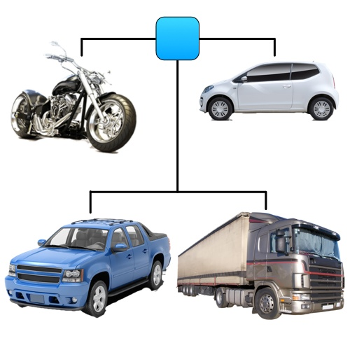
“The great thing about Object Oriented code is that it can make small, simple problems look like large, complex ones.”
- unknown
© Theodoros Papatheodorou
objection oriented design
a conceptual leap forward
- it's a conceptual change in how we program
- we won't learn new computing techniques, we just change the way we think and organize our code
- objects around us have properties and behaviors
class Ball
| 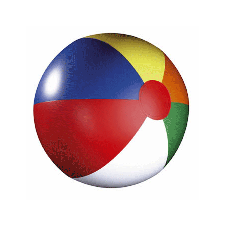 | 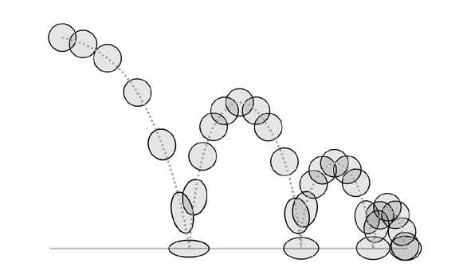 |
|---|---|
| properties | behaviors |
| shape | movement |
| color | bounce |
| weight | inflating |
| material | deflating |
| content | blowing up |
class vs. object
| class | object |
|---|---|
| phone | iphone 4G, Samsung Galaxy, HTC N1 |
| computer | lenovo z61m, DELL 1120, |
| singer | Leonard Cohen, JayZ, Lennon, Brel |
| mountain | Everest, Olympus |
| human | Socrates, Darwin, Freud |
| country | France, Germany, Iceland, UK |
| painter | Dali, Pollock, Van Gogh |
objects in Processing
- class vs. object (Ball vs. myBeachBall)
- myBeachBall is a example of an object with:
- properties → variables in Processing
- behaviors → functions in Processing
class Ball
| properties | behaviors |
| shape | movement |
| color | bounce |
| weight | inflating |
| material | deflating |
| content | blowing up |
bouncingColorBall
in pseudocode
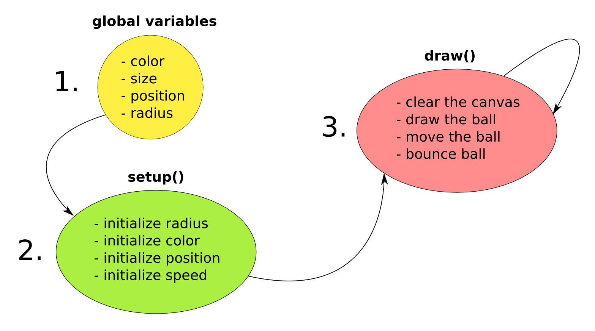bouncingColorBall
bouncingColorBall with OOP
in pseudocode
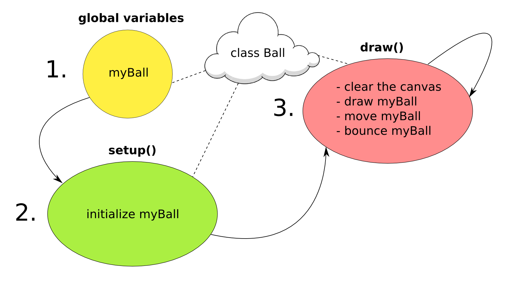bouncingColorBall_OOP
a class has
- a name
- variables
- constructor
- functions
{kind=link}
bouncingColorBalls
using arrays and OOP
bouncingColorBallArray / bouncingColorBallArray_OOP
writing a class
- a name (usually first letter upper case)
- variables
- constructor
- functions
Attention: variables, constructor and functions are written inside the curly brackets of the class!
class Ball
{
// here
}
placing the class
either under our program
void setup()
{
}
void draw()
{
}
class Ball
{
}
placing the class
or in a separate tab
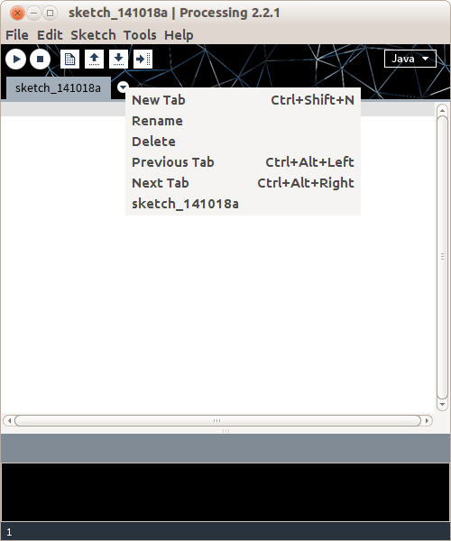Question: How do we create objects with different starting characteristics without using
Answers: Using the constructor with parameters.
bouncingColorBall_OOP_Parameters / bouncingColorBallArray_OOP_Parameters
using Classes within Classes
class Bicycle
{
Tyre tyreLeft;
Tyre tyreRight;
Bicycle()
{
tyreLeft = new Tyre();
tyreRight = new Tyre();
}
void rideBike()
{
tyreLeft.turn();
tyreRight.turn();
}
}
space invaders with Classes
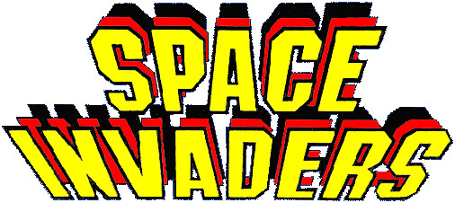
class Spaceship
{
int variable1;
int variable2;
void hit(Bullet b)
{
// check if Bullet b has hit the Spaceship
}
}
why OOP?
1. To break the problem into smaller, manageable pieces (modularity).
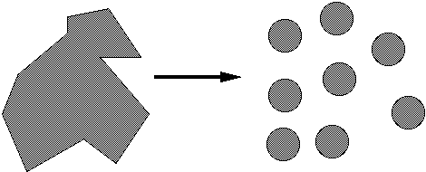why OOP?
2. In order to make our code more understandable by taking about objects and behaviors (abstraction).
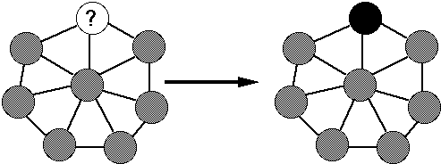why OOP?
3. So that we can combine the parts into a new system (composability).
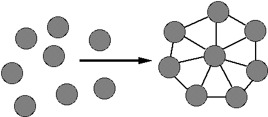why OOP?
4. So that it's easier to maintain and extend our code (continuity).
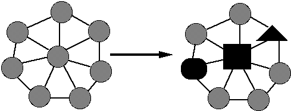